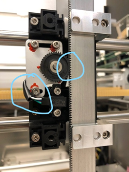
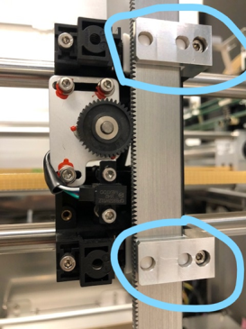
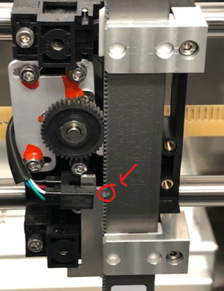

Pipettor, Z-Axis Motor Overload
Error Codes
| Dex | Hex | Arm |
|---|---|---|
| 253.000.00122 | 0xFD.0x00.0x007A | Reagent (Left) |
| 253.000.00125 | 0xFD.0x00.0x007D | Sample (Right) |
| 253.014.00122 | 0xFD.0x0E.0x007A | Reagent (Left) |
| 253.015.00125 | 0xFD.0x0F.0x007D | Sample (Right) |
Complaint Description
Panther Sample or Reagent Pipettor Z-axis motor overload detected.
Log sample
3/25/2021 21:41:29 (25 14:41:29) [E] (Fatal , High ) [PipettorSystem] Reagent Pipettor Z-axis motor overload detected ID=26295 PickupDiTi 'Select ReagentPipettingStep' (Select) PlannedStart=21:41:23.319 worst event at 21:41:29.619, start=21:41:24.219 end=21:41:29.819 (MTU=73 BarcodeID=1933543784, samples=[0] 430/2103252108524, [1] 431/2103252108525, [2] 432/2103252108526, [3] 433/2103252108527, [4] 434/2103252108528, , cmd params: Select (RP) Index=0 finalZ=0 ) [0xFD.0x0E.0x007A] [253.014.00122]
Technical Support
Z-axis = up and down movement.
Sample pipettor z-axis motor overload
- Check for any obstructions: TCR bottle cap left on, cap left on sample or control (if running SarsCov2 uncapped WF), sample shield not seated properly, tip stuck (out of place), etc.
- If sample shield was not seated properly, replace shield (as it will be contaminated).
- Reset instrument.
- If no cause was identified, perform MW cleaning to test sample pipettor and notify FSE
 Field Service Engineer..
Field Service Engineer..
Reagent pipettor z-axis motor overload
- Check if any reagent bottle cap was left on.
- Reset instrument.
- If no cause was identified, notify FSE.
Field Service
Physical Obstruction
Make sure there are no obstructions present along the travel path: hoses, cables, tubing, covers, bottle caps, sample shield, reagent bay cover, sample tips stuck in tip eject chute, etc.
Remove any obstruction.
Cables/Connections
- Make sure all cables are properly connected.
- Check for any worn out or damaged Cables.
- Re-seat Loose Cables/connectors.
- Replace worn out or damaged cables such as flex cable.
Dirty Pipettor (where L-Shaped bearing slides)
Turn Off instrument and slide the pipettor in the Z-direction to detect any binding.
Using dry lint free cloth, wipe down the pipettor Z-rod to get rid of any grime.
Pipettor Teaching
Make sure pipettor is properly taught and not binding against a module.
Re-Teach pipettor.
L-Shaped Bearing
Make sure L-Shaped bearing are not worn out or damaged.
Replace L-shaped bearing
Z-Motor/Pipettor Meshing
Turn Off instrument and Slide the pipettor in the Z-direction to detect any binding.
Using Service Software, Cycle Pipettor to different positions with sample tip eject option, or randomly move pipettor with sample tip eject option trying to duplicate error (Sample Tip Tray, Reagent Bay Probe, HPA load Station as an example).
Properly Mesh the Z-motor and the Pipettor.
Motor/Encoder Issue
Dirty Motor Encoder
Listen for Chattering from inside the motor/encoder, signs that it's struggling to keep its current position.
Bad Motor and/or Bad Encoder
Replace the motor as needed
TSE Review
First, Check for a bad Z-Motor
If the motor has already been replaced (or isn't bad), check the following (this one occurred at the tip drawer):
- Has the instrument been moved? Is the instrument level?
- The Tip drawers- do you know if it is always happening on the same drawer?
- Check the tip drawers, is there any play, once the drawer is closed and locked? Allowing movement so the tips aren’t where they should be?
- Teaching to the Tip Drawers.
- Watch the arm pick a few tips from both drawers, does the diti seem to be centered in the tips when they are picked?
- The Pipettor, have you replaced the tip eject sleeves (TB-01627), if so, maybe replace the one on the Reagent arm again.
- Check the meshing of the Z-Motor gear to the pipettor is the meshing too tight? The service manual has some good instructions and pictures, search for “Pipettor / Z-Motor Meshing”.

- Check the routing of the home sensor cable, as shown. Is the routing such that it is pushing the motor gear against the pipettor?
- Remove the Pipettor and clean the bearing surfaces, shown below. Clean both the white plastic pieces and the pipettor surfaces.

- Check to make sure there isn’t any plastic or glue impeding the movement of the pipettor, as shown below.
More things to check (especially if errors are random, and continuing to exist after all other options have been checked):
- X-Axis encoder.
- X-Axis Belts- look for debris around the gear. Move the pipettor quickly by hand, and see if the belt "pops". These are indicative of the belt skipping a tooth. The belt needs to be changed.

Checklist
- Reagent Pipettor replaced.
- Reagent pipettor Z motor replaced at least twice.
- TB-01627 new DiTi Sleeve has been performed.
- TB-01691 Encoder and Cap installation has been performed.
- Tip Drawers are properly seated no play or movement.
- No damage or misalignment with the teach positions either reference position or tip drawer teach points.
- Teaching is smooth and accurate to all modules. The Pipettor does not attempt to overexert on the teach point but rather just taps each position. Refer to the Alignment/Calibration section in the Service Manual.
- Tips are the Tecan 513 tips.
- Reagent Pipettor Y-sledge board has been replaced per service manual.
- All replacements have included a successful Firmware reflash.
- All Cable connections around the pipettor are secure and undamaged.
- There are no obstructions causing limited motion of the pipettor in any axis.
- Picking tips seems to me smooth and consistent.
- The Meshing has been performed per the service manual Note: the photo you provided looks like meshing may be a little too tight.
- Routing of the home sensor cable does not interfere with the motor gears.
- The gantry is square. See manual under Parallel check.
- Perform “Pipettor Gantry Rail Maintenance procedure” per the service manual.
- Check and replace X belts, see Pipettor X-Axis Rack Belts Removal and Replacement procedure in the service manual.
- The blue divider is fully seated.
- The sample bay cover and pipettor interference check has been performed see service manual.
- A pipettor main PCB has been replaced per the service manual.
- L shaped Bearings are not worn or damaged, replace as needed.
- Any other Damage or obstruction around the Z motor in the Gantry?
- All bearing and surfaces are clean free of dirt and debris
- The pipettor X-Flex cable and Y-Flex Cable had been replaced.
 button at the top of the page to send feedback, comments, or change requests.
button at the top of the page to send feedback, comments, or change requests.